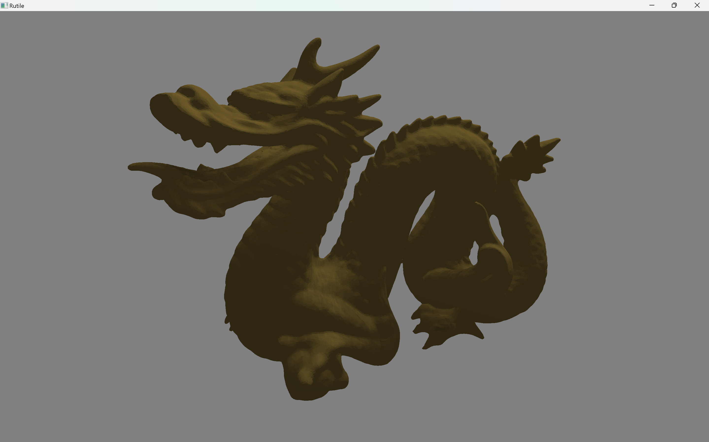
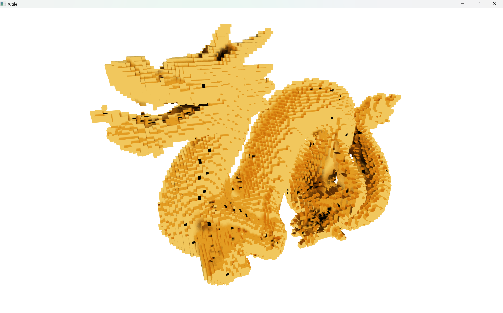
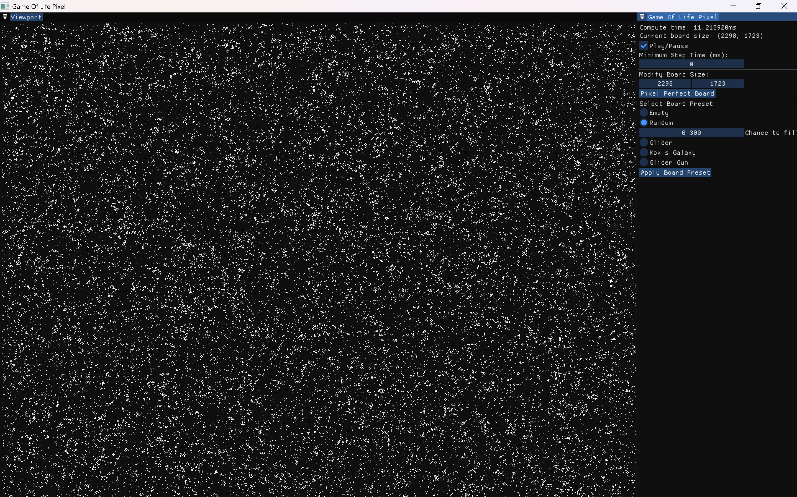
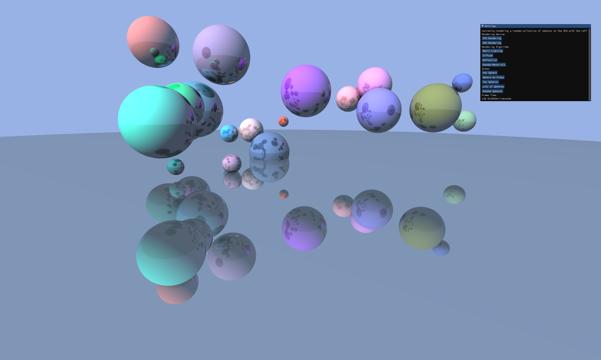
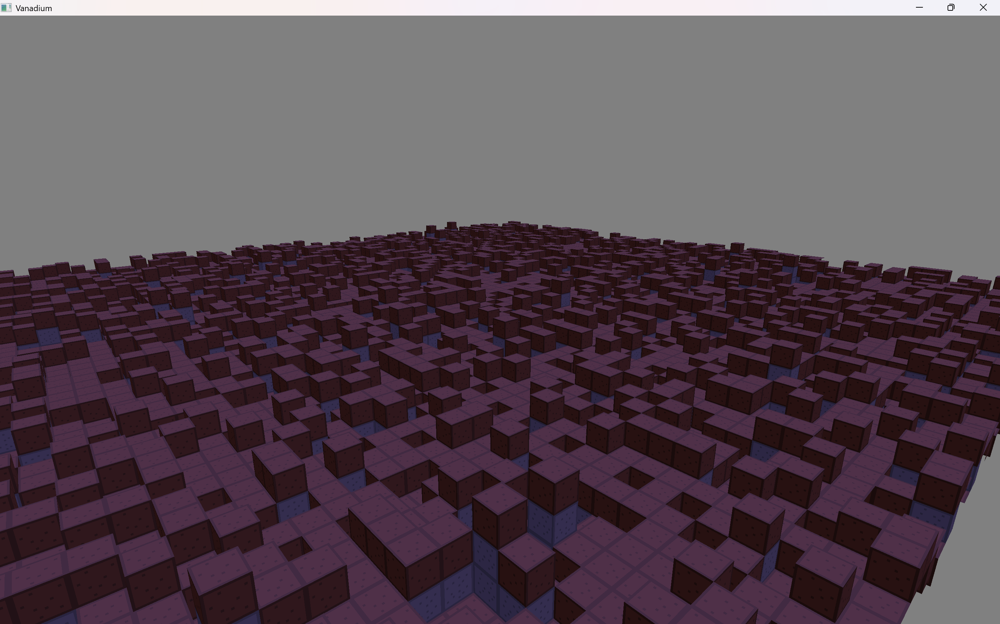
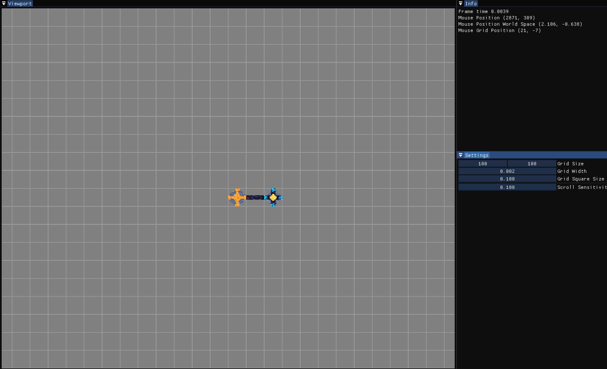
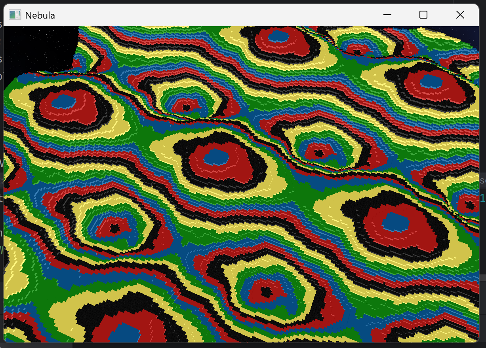
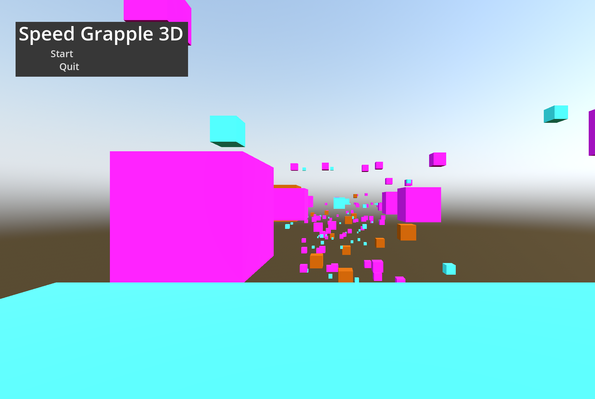

Ben Bingham

3rd Year Honors CS Student at the University of Alberta. 4+ Years experience with C++ and Graphics Programming.

Image rendered with Rutile
A rendering framework and a collection of rendererers that can all be easily hot swapped between. All renderers use the same camera and scenes allowing for easy side by side comparisons.
|  |  |
A pair of plugins developed for KDE's Okular PDF viewer that allow you to view, rotate, pan, and zoom v3d files inside okular. The first plugin lets you view standalone v3d files, and the other allows you to view pdf files with v3d files embedded inside. v3d files are "a compact 3D graphics file format for Bezier curves, Bezier patches, Bezier triangles, and triangle groups, all with optional vertex-dependent colors"
v3d file github.Okular has no support for viewing 3D models of any kind, let alone vector based 3D models, in order to create both plugins I needed to reverse engineer Okular and tap into the underlying QT layer to gather mouse input and to refresh the screen.
v3d files are typically created with Asymptote, learn more here:
Asymptote.
An ECS based game engine that i've been developing with a few friends, it is currently capable of creating Pong.
GPU accelerated game of life, where each cell can be represented by one pixel.

Primitive fragment shader based ray tracer, based loosely on Peter Shirley's
Ray Tracing in One Weekend. 
A Chunk based voxel renderer.

A basic circuit simulator.

One of my first graphics projects, on the surface its a basic voxel renderer however is uses high dimension perlin noise in order to create seamless repeating terrain. The reason I did this was because when combined with a superficial curve, and a large enough repeating section you could create a convincing spherical planet using the local flatness of large spheres. I never fully finished this project, but Vanadium is an attempt to recreate it in C++.
Unlike most other project on this page, this project was made using java.

My submission for the GMTK-2025 game jam, the theme of the jam was loop, I tried to capture that by creating a game you could play repeatadly tyring to get the fastest time possible.
Play the game in your browser
here.Unlike most other project on this page, this project was made using the Godot game engine.
